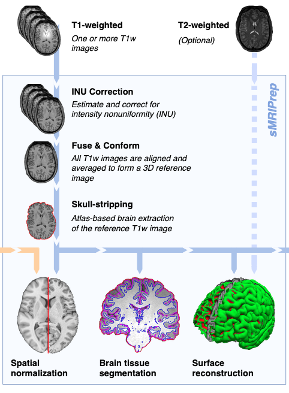
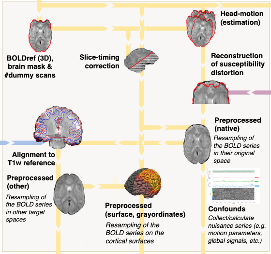
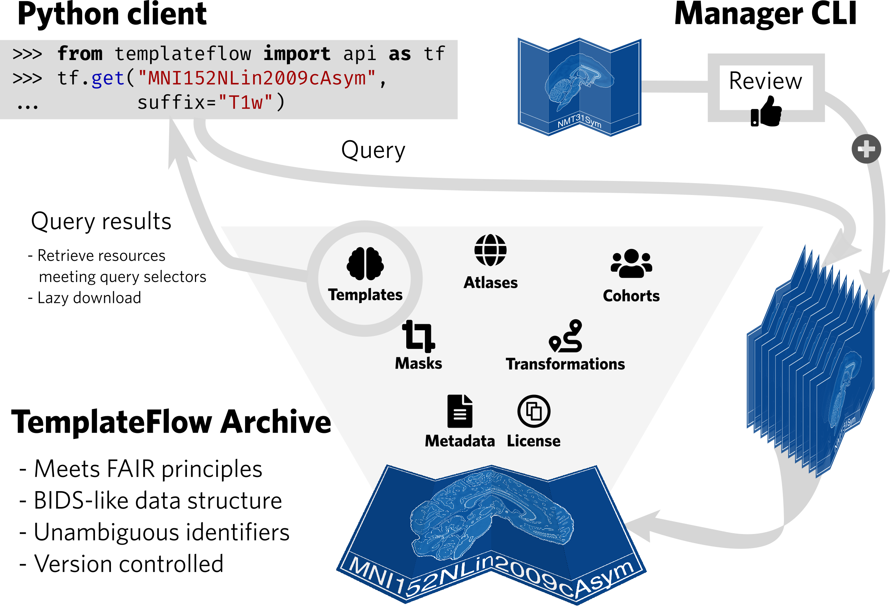
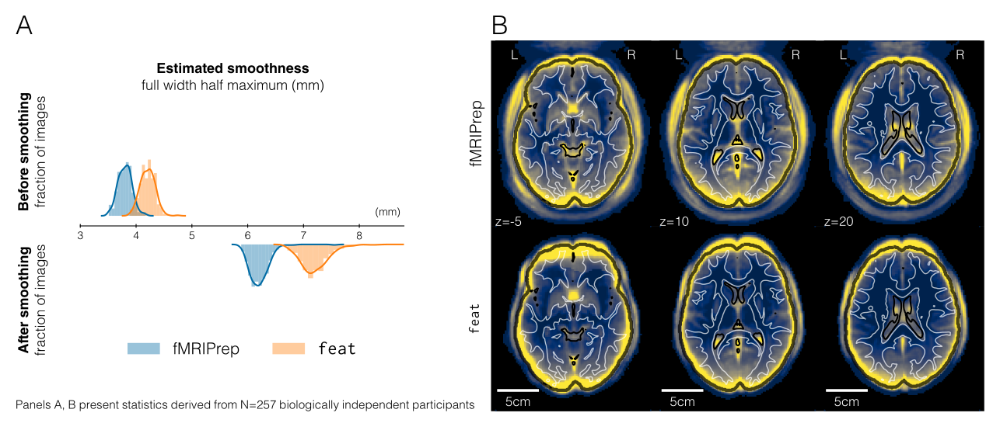
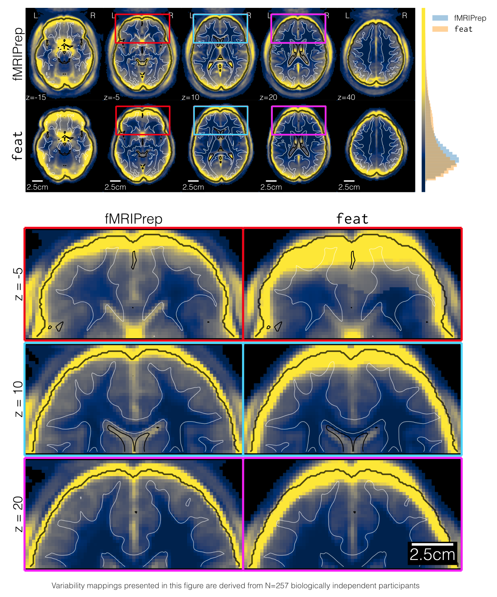
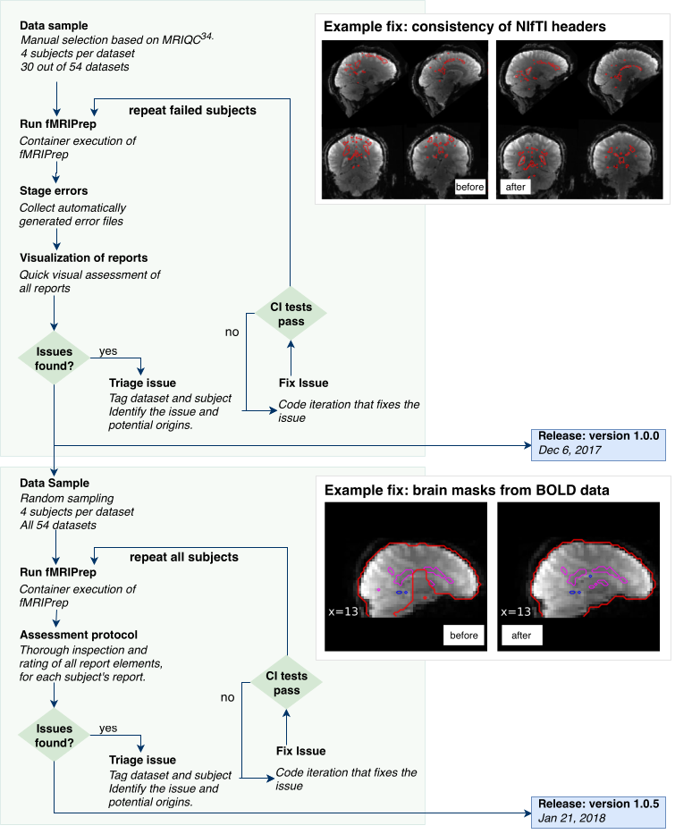

name: title layout: true class: cover, indos-cover, no-logo --- count: false .cover-band[ <img class="lockup" src="../assets/indos-logo-left-white.png" alt="INDoS" /> .eyebrow[WG3 Training School · Madrid 2026] # Standardized preprocessing ### Why pipelines, why automation: fMRIPrep as a reference model .who[Oscar Esteban <oscar.esteban@hes-so.ch><br />HES-SO Valais-Wallis · 30.09.2026] <div class="mosaic"></div> ] .cover-side[ <a href="https://www.indos-costaction.eu/wg3-ts2026-esteban/day1-02-preprocessing/"> <object type="image/svg+xml" data="images/qr-talk-url.svg"></object> <br /> www.indos-costaction.eu/wg3-ts2026-esteban/day1-02-preprocessing/ </a> ] .cover-logos[ <img src="../assets/cost-logo-darkgrey.png" alt="COST" /> <img src="../assets/eu-funded-pos.png" alt="Funded by the European Union" /> ] ??? This is the theory block of the morning: why data need preprocessing, why that preprocessing should be standardized, and how fMRIPrep implements standardization for fMRI. The QR code links to these slides. The hands-on side comes later in the week, so today stays conceptual. --- name: newsection layout: true .perma-sidebar[ <p class="rotate"> <a rel="license" href="http://creativecommons.org/licenses/by/4.0/"><img alt="Creative Commons License" style="border-width:0; height: 20px; padding-top: 6px;" src="https://i.creativecommons.org/l/by/4.0/88x31.png" /></a> <span style="padding-left: 10px; font-weight: 600;">INDoS WG3 Training School · Standardized preprocessing (30.09.2026)</span> </p> ] --- class: vcenter # Outlook .cards.goals[ .card[ .marker[<i class="fa-solid fa-circle-right"></i>] Overview of the **neuroimaging workflow** .gray-text[where preprocessing sits, and why data require it] ] .card[ .marker[<i class="fa-solid fa-circle-right"></i>] **Processing and reproducibility** .gray-text[analytical variability, and two ways to more reliable measurements] ] .card[ .marker[<i class="fa-solid fa-circle-right"></i>] **Why pipelines, why automation** .gray-text[what standardizing a procedure buys us] ] .card[ .marker[<i class="fa-solid fa-circle-right"></i>] ***fMRIPrep*** as a reference model .gray-text[design, constraints, visual reports, validation, community] ] .card[ .marker[<i class="fa-solid fa-circle-right"></i>] From MRI to **M/EEG** .gray-text[*NiPreps*, and where the rest of this school picks up] ] ] ??? Five parts. First, where preprocessing sits within the research workflow and why data cannot be analyzed as they come off the scanner. Second, how processing interacts with reproducibility. Third, the case for pipelines and automation. Fourth, fMRIPrep as a worked example of standardized preprocessing. Finally, the bridge to this Working Group: M/EEG. --- # The neuroimaging research workflow .boxed-content[ <object type="image/svg+xml" data="images/neuroimaging-workflow-large.svg" style="width: 100%; padding-top: 20pt;"></object> .center[ [Esteban et al., (2020)](https://doi.org/10.1038/s41596-020-0327-3); [Niso et al., (2022)](https://doi.org/10.1016/j.neuroimage.2022.119623) ] ] ??? In broad strokes, this is the neuroimaging research workflow. It looks like any machine learning pipeline: we acquire data, perform quality control, preprocess, define features, and then apply statistical modeling to extract insights. The two references below give a deeper dive into the details of the workflow. The selling points are: - Data collection and organization is mostly data management. Sequences improve over time and that demands updates in the data management workflow (e.g., BIDS conversion), but you can get a very stable solution here. - Statistical modeling requires some flexibility to come up with new and better models, so we may allow some analytical variability not to stymie progress. - Preprocessing is the step in between, where standardization can (i) give you as an individual researcher a solid ground for this and future studies; (ii) make your study more comparable to others who standardize the same way. --- count: false # The neuroimaging research workflow .boxed-content[ <object type="image/svg+xml" data="images/neuroimaging-workflow-1.svg" style="width: 100%; padding-top: 20pt;"></object> .no-bullet[ * .larger[<i class="fa-solid fa-clipboard-list"></i> Run the **experiment** following Standard Operating Procedures (SOPs)] * .larger[<i class="fa-solid fa-folder-tree"></i> **Standardized data structure** (BIDS: Brain Imaging Data Structure)] * .larger[<i class="fa-solid fa-square-check"></i> **QA/QC** (quality assurance and control)] ] .center.small[ [Esteban et al., (2017)](https://doi.org/10.1371/journal.pone.0184661); [Provins et al., (2023)](https://doi.org/10.3389/fnimg.2022.1073734); [Provins et al., (2025)](https://doi.org/10.1371/journal.pbio.3003149) ] ] ??? The workflow starts with data acquisition, management and quality assurance and control (QA/QC). Models are only as good as their data, and neuroimaging is no exception. This is why standards like BIDS, version-controlled and machine-readable standard operating procedures, and comprehensive QA/QC protocols matter: they detect suboptimal data early. BIDS gets its own session later today. --- count: false # The neuroimaging research workflow .boxed-content[ <object type="image/svg+xml" data="images/neuroimaging-workflow-2.svg" style="width: 100%; padding-top: 20pt;"></object> .no-bullet[ * .larger[<i class="fa-solid fa-smog"></i> Detection of **nuisance sources**] * .larger[<i class="fa-solid fa-magnifying-glass-location"></i> Spatiotemporal **location** of signals] * .larger[<i class="fa-solid fa-location-crosshairs"></i> Definition of **brain units** of analysis (regions)] ] .center.small[ [Esteban et al., (2019)](https://doi.org/10.1038/s41592-018-0235-4); [Ciric et al., (2022)](https://doi.org/10.1038/s41592-022-01681-2); [Adebimpe et al., (2022)](https://doi.org/10.1038/s41592-022-01458-7) ] ] ??? Next in the workflow is preprocessing, which transforms raw data into something models can reliably interpret. For example, it identifies signals of no interest for their cleaning or accounting within modeling. In neuroimaging, preprocessing also deals with accurately locating signals and objects in space and time, and often the definition of relevant brain regions that focus the analysis. A decade ago, we might have called it "feature engineering." This is the step this talk is about. --- # Why do data require preprocessing? .large.center[ <i class="fa-solid fa-circle-exclamation"></i> MRI measurements *generally* **cannot** be directly analyzed. ] .cards.cols-2.brand[ .card[ .section-icon.corner[<i class="fa-solid fa-map-pin"></i>] .kicker[consistency and accuracy] ### Spatiotemporal location * **within runs**: head-motion, slice-timing * **within individuals**: coregistration between runs and with anatomy, susceptibility distortions * **across subjects**: spatial normalization ] .card[ .section-icon.corner[<i class="fa-solid fa-location-crosshairs"></i>] .kicker[confounders and covariates] ### Signal *validity* * confounders such as global signals, signal drifts, DVARS * known artifacts such as head-motion parameters and derivations * spatiotemporal filtering to increase SNR ] ] .admonition[ <i class="fa-solid fa-bullseye"></i> **End goal**: minimize false positives without increasing false negatives. ] ??? MRI measurements generally cannot be directly analyzed. All analyses require consistency and accuracy in spatiotemporal location: the signal must be drawn from the same location, at the accurate time, at all time points, and sampled consistently with the analysis design (e.g., surface or volume). That applies within runs (head motion, slice timing), within individuals (coregistration between runs, coregistration with anatomy, susceptibility distortion), and across subjects (spatial normalization). All analyses must also consider confounders and covariates that undermine the validity of the measurements: extraction of confounds, identification of and accounting for artifacts, spatiotemporal filtering for denoising. The end goal is to minimize false positives without increasing false negatives. --- # Example: susceptibility distortion .center[ <object type="image/svg+xml" data="images/sdc-the-problem.svg" style="width: 72%;"></object> ] ??? Here is one concrete example of the spatial location problem: susceptibility distortions. Echo-planar images are geometrically distorted along the phase-encoding direction, near air-tissue interfaces. If not accounted for, the signal of a voxel is not drawn from where we think it is. --- class: vcenter .section-mark[ # Processing and reproducibility .large.gray-text[How do they interact? Why standardize?] ] ??? Now, how do processing and reproducibility interact? --- # Analytical variability .cards.goals[ .card[ .marker[<i class="fa-solid fa-triangle-exclamation"></i>] **Diffusion MRI**: tractography challenge ([Maier-Hein et al., 2017](https://doi.org/10.1038/s41467-017-01285-x)) .gray-text[Tractography-based connectomes are dominated by false-positive connections] ] .card[ .marker[<i class="fa-solid fa-triangle-exclamation"></i>] **Functional MRI**: NARPS ([Botvinik-Nezer et al., 2020](https://doi.org/10.1038/s41586-020-2314-9)) .gray-text[Single dataset, 70 teams, 9 *ex-ante* hypotheses: striking analytical variability, even among teams using the same preprocessing] ] .card[ .marker[<i class="fa-solid fa-triangle-exclamation"></i>] **Resting-state fMRI**: [Li et al., (2024)](https://doi.org/10.1038/s41562-024-01942-4) .gray-text[Single test-retest dataset, 5 pipelines: moderate inter-pipeline agreement, limiting cross-study replicability] ] ] .admonition.warning[ <i class="fa-solid fa-circle-right"></i> The reproducibility of preprocessing **sets bounds** to the reproducibility of downstream analyses. ] ??? Although simple on the surface, the workflow is highly complex and each step introduces potential variability. Every lab around the world might use a slightly different pipeline. Different tools and different parameters lead to inconsistent results. This fragmentation hinders progress and precludes between-study comparisons. The reproducibility of preprocessing sets bounds to the reproducibility of downstream analyses. --- # Analytical variability in dMRI <figure style="width: 70%">  <figcaption>From <a href="https://doi.org/10.1038/s41467-017-01285-x">Maier-Hein et al. 2017</a>; doi:</figcaption> </figure> ??? In the tractography challenge, many teams reconstructed bundles from the same simulated data with a known ground truth. The draft title of the paper (2015) said it all: "Tractography-based connectomes are dominated by false-positive connections." --- # Analytical variability in fMRI <figure style="width: 65%">  <figcaption>From <a href="https://doi.org/10.1038/s41586-020-2314-9">Botvinik-Nezer et al. 2020</a>; doi:</figcaption> </figure> ??? NARPS: a single dataset was distributed to 70 teams, who tested the same 9 hypotheses. Results varied substantially across teams, even among teams using the same preprocessing. --- .center[ <object type="image/svg+xml" data="images/reproducible-definition-grid.svg" style="width: 68%"></object> .small[ *The Turing Way project* illustration by Scriberia. Used under a CC-BY 4.0 licence. doi:<a href="https://doi.org/10.5281/zenodo.3332807">10.5281/zenodo.3332807</a>.] ] ??? The Turing Way's grid: same or different data, crossed with same or different analysis. Reproducible: same data, same analysis. Replicable: different data, same analysis. Robust: same data, different analysis. Generalizable: different data, different analysis. --- # More reliable measurements .center[ .boxed-content[ <object type="image/svg+xml" data="images/reproducible-definition-grid-axes-0.svg" style="width: 58%;"></object> .small[[Esteban, (2025)](https://doi.org/10.1007/978-1-0716-4260-3_8) [[Methods for analyzing large neuroimaging datasets](https://doi.org/10.1007/978-1-0716-4260-3)]] ] ] ??? In the book chapter below, I frame reliability along two axes. First axis: repeat the measurement, so that random errors cancel out. --- count: false # More reliable measurements .center[ .boxed-content[ <object type="image/svg+xml" data="images/reproducible-definition-grid-axes-1.svg" style="width: 58%;"></object> .small[[Esteban, (2025)](https://doi.org/10.1007/978-1-0716-4260-3_8) [[Methods for analyzing large neuroimaging datasets](https://doi.org/10.1007/978-1-0716-4260-3)]] ] ] ??? Second axis: standardize the procedure, which reduces methodological variability. --- count: false # More reliable measurements .center[ .boxed-content[ <object type="image/svg+xml" data="images/reproducible-definition-grid-axes-3.svg" style="width: 58%;"></object> .small[[Esteban, (2025)](https://doi.org/10.1007/978-1-0716-4260-3_8) [[Methods for analyzing large neuroimaging datasets](https://doi.org/10.1007/978-1-0716-4260-3)]] ] ] ??? Overlaying the Turing Way grid on the two axes: moving along either one changes which of the four boxes we are testing. --- count: false # More reliable measurements .center[ .boxed-content[ <object type="image/svg+xml" data="images/reproducible-definition-grid-axes-2.svg" style="width: 58%;"></object> .small[[Esteban, (2025)](https://doi.org/10.1007/978-1-0716-4260-3_8) [[Methods for analyzing large neuroimaging datasets](https://doi.org/10.1007/978-1-0716-4260-3)]] ] ] ??? QA/QC combines both axes: quality assurance standardizes the procedure, quality control checks its repeatability. --- class: vcenter # Two ways to more reliable measurements .cards.cols-2.brand[ .card[ .section-icon.corner[<i class="fa-solid fa-repeat"></i>] .kicker[strategy 1] ### Repeat the measurement Random errors cancel out. ] .card[ .section-icon.corner[<i class="fa-solid fa-ruler-combined"></i>] .kicker[strategy 2] ### Standardize the procedure Reduce methodological variance (potentially at the cost of bias). ] ] .admonition.warning[ Both strategies *reduce the variance* of the measurement. Neither ensures the **validity** of the measurement. ] ??? There are two ways of increasing the reliability of measurements. Repeat the measurement: random errors cancel out. Standardize the measurement procedure: reduce the variance coming from methodology, potentially at the cost of introducing bias. Both strategies reduce the variance of the measurement. Neither ensures its validity: that is still on us, and it is why validation matters. --- class: vcenter # Beyond analytical variability .cards.cols-2.brand[ .card[ .section-icon.corner[<i class="fa-solid fa-dice"></i>] .kicker[randomness] ### Random seeds Keep track of them (do *not* fix them) and report them. ] .card[ .section-icon.corner[<i class="fa-solid fa-calculator"></i>] .kicker[numerical precision] ### Floating-point arithmetic Random rounding of calculations uncovered substantial changes between patch releases of *fMRIPrep*. .foot[[Chatelain et al., (2023)](https://doi.org/10.48550/arXiv.2307.01373)] ] ] ??? Beyond analytical variability, other sources of variability are on the way. Random seeds: keep track of them and report them, rather than fixing them. Fixing a seed hides the variability rather than removing it. Chatelain and colleagues introduced random rounding of floating-point calculations and uncovered substantial changes between patch releases of fMRIPrep. --- # Why pipelines, why automation .cards.cols-3.tight.brand[ .card[ .section-icon.corner[<i class="fa-solid fa-receipt"></i>] .kicker[provenance] ### Transparency Every run records what was executed, with which version and settings, and shows it in a visual report. ] .card[ .section-icon.corner[<i class="fa-solid fa-layer-group"></i>] .kicker[scale] ### One procedure, any size The same steps for one participant or for large consortia such as ENIGMA. ] .card[ .section-icon.corner[<i class="fa-solid fa-toolbox"></i>] .kicker[best practice] ### Encoded once Tools selected for their strengths, implemented once and reused by everyone. ] .card[ .section-icon.corner[<i class="fa-solid fa-vial-circle-check"></i>] .kicker[testing] ### CI and versions Continuous integration, exact versions, long-term support releases. ] .card[ .section-icon.corner[<i class="fa-solid fa-people-group"></i>] .kicker[community review] ### Many eyes Open source: bug reports, feature requests and questions review every decision. ] .card.accent[ .section-icon.corner[<i class="fa-solid fa-industry"></i>] .kicker[in short] ### DevOps-inspired Software engineering practice brought into the research workflow. ] ] ??? Why pipelines, and why automate them? Provenance and transparency: an automated pipeline records what was run, which version and which settings, and reports it back through visual reports. Scale: the same procedure applies to one participant or to large consortia such as ENIGMA, without a human re-deciding every step. Best practice encoded once: select the tools from each suite according to their strengths, implement once, reuse everywhere, instead of every lab re-implementing its own variant. Testing: continuous integration and validation, exact versioning, long-term support releases. Community review: open source, bug reports, feature requests and questions on NeuroStars mean many eyes look at every decision. Community is critical to provide a footing for standardization, following BIDS' experience. In short: DevOps-inspired standardization, integrating software engineering best practices from industry into the neuroimaging workflow and reducing the gap between research and application. --- # fMRIPrep: minimal, yet complex .boxed-content.center[ <object type="image/svg+xml" data="images/fmriprep-natmeth-fig01.svg" style="width: 72%;"></object> ] ??? Here is a very much simplified overview of fMRIPrep's design (Esteban et al., 2019, Nature Methods, Figure 1). Despite it being just "minimal" preprocessing and just one step of the workflow, its complexity is evident. --- count: false class: stepwise-svg # fMRIPrep: minimal, yet complex .boxed-content.center[ <object type="image/svg+xml" data="images/fmriprep-natmeth-fig01.svg" style="width: 72%;"></object> ] ??? Walk through the figure one block at a time: the anatomical workflow on the left, the functional workflow on the right, and how they meet at the alignment to the T1w reference. --- # Anatomical processing .left-column2.center[ <p></p> ] .right-column2[ .large[Delivered within *sMRIPrep*] .larger[ <i class="fa-solid fa-circle-right"></i> Denoising <i class="fa-solid fa-circle-right"></i> INU correction <i class="fa-solid fa-circle-right"></i> Averaging (multi-session) <i class="fa-solid fa-circle-right"></i> Brain extraction <i class="fa-solid fa-circle-right"></i> Spatial normalization <i class="fa-solid fa-circle-right"></i> Brain tissue segmentation <i class="fa-solid fa-circle-right"></i> Surface reconstruction ] ] ??? The anatomical processing is delivered by sMRIPrep: denoising, intensity non-uniformity (INU) correction, averaging across sessions, brain extraction, spatial normalization, tissue segmentation and surface reconstruction. This anatomical reference is what the functional data are later aligned to. --- # Functional processing .left-column2.center[ <p></p> ] .right-column2[ .larger[ <i class="fa-solid fa-circle-right"></i> Reference volume <i class="fa-solid fa-circle-right"></i> Slice-timing (optional) <i class="fa-solid fa-circle-right"></i> Head-motion (estimation) <i class="fa-solid fa-circle-right"></i> Susceptibility distortion (estimation) <i class="fa-solid fa-circle-right"></i> Co-registration with anatomical T1w <i class="fa-solid fa-circle-right"></i> Resampling into specific spaces <i class="fa-solid fa-circle-right"></i> Confound collection ] ] ??? The functional processing: a reference volume, optional slice-timing correction, head-motion estimation, susceptibility distortion estimation, co-registration with the anatomical T1w, resampling into the requested spaces, and the collection of confounds. Note the word "estimation": transforms are estimated first and applied in a single resampling step at the end. --- # TemplateFlow: FAIR access to templates .boxed-content.center[ <p></p> .small[[Ciric et al., (2022)](https://doi.org/10.1038/s41592-022-01681-2)] ] ??? Spatial normalization needs templates. TemplateFlow gives FAIR (findable, accessible, interoperable, reusable) programmatic access to templates and atlases across scales and species. --- # SDCFlows .boxed-content[ .large[ SDC <i class="fa-solid fa-circle-right"></i> Susceptibility-derived Distortion Correction ] .larger[ *SDCFlows* "caters" preprocessed fieldmap estimations for *fMRIPrep* to reconstruct the nonlinear displacements field that reverts the geometrical distortion. ] .center[ <object type="image/svg+xml" data="images/sdc-the-problem.svg" style="width: 40%;"></object> ] ] ??? Back to our example. SDCFlows estimates fieldmaps from whatever the dataset offers and hands fMRIPrep what it needs to reconstruct the nonlinear displacements field that reverts the distortion. Like TemplateFlow, it is a stand-alone component that other pipelines can reuse. --- # Visual reports .boxed-content[ <iframe src="https://fmriprep.s3.amazonaws.com/bootcamp-geneva-2024/sub-15.html" width="100%" height="470px" style="border: 0; margin-top: 5px"></iframe> ] ??? Every fMRIPrep run produces a visual report, one per participant. Each processing step leaves a reportlet so that you can check it visually. This is the transparency argument made concrete: you do not need to trust the pipeline blindly. Scroll through it live if the connection allows. --- class: vcenter # fMRIPrep's design .cards.cols-3.brand[ .card[ .section-icon.corner[<i class="fa-solid fa-shield-halved"></i>] .kicker[robust and adaptive] ### Minimal requirements * T1w + BOLD run * uses T2w/FLAIR, field maps when available * multi-echo BOLD ] .card[ .section-icon.corner[<i class="fa-solid fa-diagram-project"></i>] .kicker[cross-suite tooling] ### Best of each suite * tools selected according to their strengths * *Nipype* abstracts tool details into modular workflows ] .card[ .section-icon.corner[<i class="fa-solid fa-ruler-combined"></i>] .kicker[standards and best practices] ### Standardized * BIDS (inputs), BIDS-Derivatives (outputs), BIDS Apps * containers, versioning, LTS, open source, CI/CD * visual reports ] ] .slide-footer.small[ [Esteban, (2025)](https://doi.org/10.1007/978-1-0716-4260-3_8) ] ??? fMRIPrep's design has three pillars. Robust and adaptive: minimal requirements (a T1w image and a BOLD run), and it uses additional scans (T2w or FLAIR, field maps) when available. It can preprocess multi-echo BOLD. Cross-suite tooling: select the tools from each suite (AFNI, ANTs, FreeSurfer, FSL) according to their strengths, and use Nipype to abstract away tool details and build modular workflows. Standardization and best practices: BIDS for the inputs, BIDS-Derivatives for the outputs, BIDS Apps for the architecture; containers, versioning, LTS, open source, CI/CD; and visual reports. --- class: vcenter # Constraints and limitations .cards.cols-3.brand[ .card[ .section-icon.corner[<i class="fa-solid fa-scissors"></i>] .kicker[analysis-agnostic] ### Minimal preprocessing *Conservative*: it will not regress out signals or apply smoothing kernels. Confounds are collected; the analyst decides. ] .card[ .section-icon.corner[<i class="fa-solid fa-user"></i>] .kicker[cross-sectional] ### Anatomy is stable Assumes the individual's anatomy does not change across sessions (anatomical images are averaged). ] .card[ .section-icon.corner[<i class="fa-solid fa-chart-pie"></i>] .kicker[scope] ### The 80/20 principle Cover what most studies need, well, rather than every corner case. ] ] ??? The constraints are deliberate. Agnostic to downstream analysis: fMRIPrep applies minimal processing and refrains from analysis-specific steps. It will not regress out signals nor apply smoothing kernels. It collects confounds, and the analyst decides how to use them. Cross-sectional: fMRIPrep assumes the individual's anatomy does not change across sessions. Driven by the 80/20 principle: the scope is kept to what most users need. Keeping the scope tight is what keeps a standard maintainable. --- # Standardization in the research workflow .boxed-content[ .center[ <object type="image/svg+xml" data="images/neuroimaging-workflow-large.svg" style="width: 80%;"></object> ] .cards.goals.tight[ .card[ .marker[<i class="fa-solid fa-database"></i>] **Data collection**: easy to standardize .gray-text[BIDS, scanners' software] ] .card[ .marker[<i class="fa-solid fa-gears"></i>] **Preprocessing**: an **opportunity** to reduce analytical flexibility .gray-text[and **enable** cross-study comparisons] ] .card[ .marker[<i class="fa-solid fa-chart-line"></i>] **Statistical modeling**: keep analytical flexibility .gray-text[not to stifle the development of new ideas] ] ] ] ??? Back to the research workflow, and to the thesis of this talk. Data collection is easy to standardize: BIDS, scanners' software. Statistical modeling needs analytical flexibility, not to stifle the development of new ideas. Preprocessing sits in between, and offers an opportunity to reduce analytical flexibility and enable cross-study comparisons. --- # Standardizing preprocessing: validation .boxed-content.center[ <p></p><br /> (<a href="https://doi.org/10.1038/s41592-018-0235-4">Esteban et al., 2019</a>) ] ??? A standard must be validated. In the fMRIPrep paper we compared against an alternative, widely used pipeline, looking at the smoothness of the preprocessed data. --- count: false # Standardizing preprocessing: validation .boxed-content.center[ <p></p><br /> (<a href="https://doi.org/10.1038/s41592-018-0235-4">Esteban et al., 2019</a>) ] ??? --- count: false # Standardizing preprocessing: validation .boxed-content.center[ <p></p><br /> (<a href="https://doi.org/10.1038/s41592-018-0235-4">Esteban et al., 2019</a>) ] ??? The validation protocol: sample participants from many datasets, run fMRIPrep, look at the visual reports, triage the issues found, fix them, check that the CI tests pass, and release. Then repeat. Validation is not a one-off: every release is tested through continuous integration. --- # Tracking fMRIPrep's adoption .center[ <img src="https://github.com/nipreps/fmriprep_stats/releases/latest/download/weekly.png?v=today" alt="fMRIPrep weekly usage" style="width: 82%; padding-top: 10pt" /> ] ??? fMRI practitioners have massively adopted fMRIPrep globally, which has permitted the creation of a large community. Building that community was important for fMRIPrep: bug reports help development, feature requests help drive a roadmap, and questions on NeuroStars are the entry point to deliver support. --- # Versions and long-term support .larger[ <i class="fa-solid fa-circle-right"></i> It's critical to report **exact versions** <i class="fa-solid fa-circle-right"></i> Semantics inform about compatibility: **24.0.1** <i class="fa-solid fa-circle-right"></i> Long-term support (LTS) program ] .center[ <img src="https://github.com/nipreps/fmriprep_stats/releases/latest/download/versionstream.png?v=today" alt="fMRIPrep usage by version" style="width: 88%; padding-top: 10pt" /> ] ??? It's critical to report exact versions. The version number itself carries information about compatibility. The long-term support program gives large studies a version they can keep for the duration of the project while still receiving fixes. --- # NiPreps produce analysis-grade data .boxed-content[ .larger.center[ "*analysis-grade*" data <i class="fa-solid fa-circle-right"></i> data **directly consumable by analyses** ] .pull-left[ <br /> *Analysis-grade* data is an analogy to the concept of "*sushi-grade* (or [sashimi-grade](https://en.wikipedia.org/wiki/Sashimi)) fish" in that both are: .large[<i class="fa-solid fa-circle-right"></i> **minimally preprocessed**,] and .large[<i class="fa-solid fa-circle-right"></i> **safe to consume** directly.] ] .pull-right.center[ <a href="https://www.nipreps.org"><object type="image/svg+xml" data="images/qr-nipreps-url.svg" style="width: 32%"></object><br /> www.nipreps.org</a> ] ] ??? NiPreps (NeuroImaging PREProcessing toolS) generalizes fMRIPrep: a framework for standardized preprocessing pipelines in neuroimaging. I often use the "sushi-grade" analogy: just like sushi-grade fish is minimally processed but safe to consume, NiPreps yields "analysis-grade" data, with minimal processing interventions but ready for direct consumption by analyses. --- # The NiPreps ecosystem .center[ <object type="image/svg+xml" data="https://www.nipreps.org/identity/nipreps-general/nipreps-chart.svg" style="width: 55%"></object><br /> <em>NiPreps</em> (<a href="https://doi.org/10.31219/osf.io/ujxp6">Esteban et al., 2020</a>) ] ??? Here's the basic architecture. It's an ecosystem of modular tools at four levels of abstraction: - End-user applications: fMRIPrep, sMRIPrep, dMRIPrep, PETPrep, and MRIQC for quality control. - Middleware utilities: SDCFlows, TemplateFlow, NiBabies, NiRodents, MRIQC-learn, CrowdMRI. - Software infrastructure: NiPype, NiBabel, NiWorkflows, NiTransforms, BIDS and PyBIDS. - Foundational packages the pipelines build on: AFNI, ANTs, FSL, FreeSurfer, Connectome Workbench, DIPY, ITK, Nilearn, scikit-image, scikit-learn. This is the MRI side of what WG3 wants to map across modalities. --- class: vcenter # What's next? .cards.goals[ .card[ .marker[<i class="fa-solid fa-meteor"></i>] **PETPrep officially released** .gray-text[Plans for a *FactoryPrep* that allows creating neuroimaging workflows] ] .card[ .marker[<i class="fa-solid fa-route"></i>] The *fit & transform* paradigm .gray-text[Lightweight, deterministically reproducible outputs] ] .card[ .marker[<i class="fa-solid fa-icicles"></i>] **NiFreeze**: head-motion estimation for all .gray-text[Estimating (and correcting) head motion across modalities] ] ] ??? The NiPreps framework keeps extending. PETPrep has been officially released, and there are plans for a "FactoryPrep" that allows creating neuroimaging workflows. The fit and transform paradigm: estimate once, then produce lightweight, deterministically reproducible outputs. NiFreeze: head-motion estimation (and correction) across modalities. The pattern repeats: identify what is common to a modality, standardize it, validate it, and let a community carry it. --- class: vcenter # From MRI to M/EEG <div class="cta" style="margin-right: 55px;"><p><strong>INDoS WG3</strong>: well-justified, documented preprocessing, starting with <strong>EEG/MEG</strong>, drawing on the experience from MRI.</p></div> .cards.cols-2.brand[ .card[ .section-icon.corner[<i class="fa-solid fa-wave-square"></i>] .kicker[Thursday · 09:45] ### EEG/MEG preprocessing What would an *fMRIPrep* for M/EEG take? .foot[Yasser Alemán-Gómez] ] .card[ .section-icon.corner[<i class="fa-solid fa-brain"></i>] .kicker[Friday · 09:00] ### fMRI preprocessing with *fMRIPrep* The hands-on side of today's reference model. .foot[Lea Waller] ] ] .admonition.question[ <i class="fa-solid fa-circle-question"></i> Which of today's ingredients carry over to M/EEG as they are, and which need rethinking? ] ??? This brings us to the aim of this Working Group: well-justified, documented preprocessing, starting with EEG and MEG, drawing on the experience from MRI. On Thursday at 09:45, Yasser Alemán-Gómez's block asks precisely what an fMRIPrep for M/EEG would take. On Friday at 09:00, Lea Waller takes you through fMRI preprocessing with fMRIPrep, hands-on. That is why today stayed conceptual. A question to carry through the week: which of today's ingredients (standard inputs, minimal and analysis-agnostic processing, visual reports, versioning, validation, community) carry over as they are, and which need rethinking? --- class: vcenter # Take-home messages .cards.goals[ .card[ .marker[<i class="fa-solid fa-triangle-exclamation"></i>] Data **cannot** be directly analyzed .gray-text[spatiotemporal location, signal validity, and analytical variability] ] .card[ .marker[<i class="fa-solid fa-clover"></i>] Preprocessing has **standardization potential** .gray-text[standardizing the procedure reduces variance; validation keeps it honest] ] .card[ .marker[<i class="fa-solid fa-gears"></i>] Pipelines and automation make it **transparent, scalable and testable** .gray-text[*fMRIPrep*: design principles, constraints, visual reports] ] .card[ .marker[<i class="fa-solid fa-handshake-simple"></i>] *NiPreps* generalize *fMRIPrep* .gray-text[analysis-grade data; next stop for this Working Group: M/EEG] ] ] ??? To recap. MRI data cannot be directly analyzed: spatiotemporal location, signal validity, and analytical variability. Preprocessing is an area with standardization potential. fMRIPrep is an example of implementation in fMRI, with its design principles, its constraints, and visual reports. NiPreps generalize fMRIPrep, with the concept of analysis-grade data. --- class: vcenter # Thank you .cta[ All materials: **www.indos-costaction.eu/wg3-ts2026-esteban**, CC BY 4.0. ] .cost-ack[ <img src="../assets/cost-logo-darkgrey.png" alt="COST" /> <img src="../assets/eu-funded-pos.png" alt="Funded by the European Union" /> This publication is based upon work from COST Action CA24161 (INDoS), supported by COST (European Cooperation in Science and Technology). ]